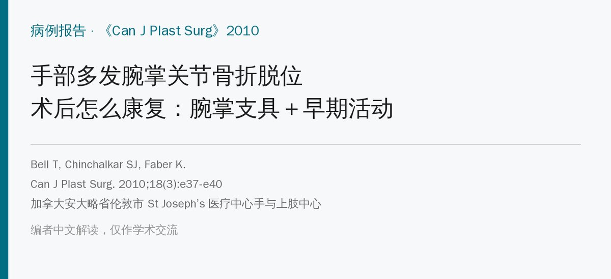
🔖原文信息（编者中文重排）
📚 文献信息
▪ Bell T, Chinchalkar SJ, Faber K. Postoperative management of carpometacarpal joint fracture dislocation of the hand: A case report. Can J Plast Surg. 2010;18(3):e37-e40.
▪ 作者单位：加拿大安大略省伦敦市 St Joseph’s 医疗中心手与上肢中心
▪ 文章类型：病例报告（1 例）
• 第 2～5 指腕掌关节同时骨折脱位很少见，多由车祸等高能量外伤引起，闭合复位常失败，首选切开复位克氏针固定
• 作者设计了一种环形腕掌稳定支具：从掌骨头包到桡腕关节，只保护腕掌关节，腕和手指可以照常活动
• 本例第 8 周开始手治疗，第 10 周掌指、指间关节活动度恢复；第 12 周停支具开始强化，约半年时握力恢复到健侧的 85%
• 但只有 1 例，而且石膏固定了 6 周，并不算真正的“早期”活动
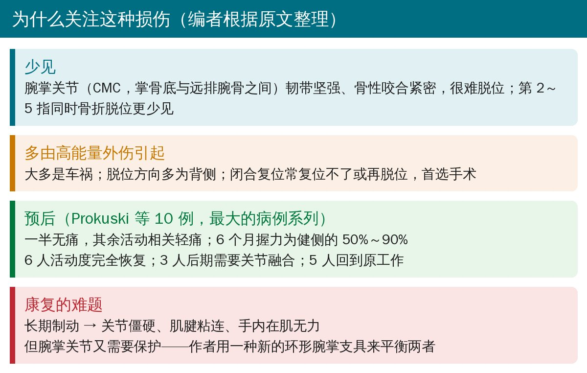
🔖背景（编者根据原文整理）
腕掌关节由掌骨底和远排腕骨构成，周围韧带非常坚强，骨性咬合也很紧密，通常很难脱位。一旦多个腕掌关节同时骨折脱位，往往意味着很大的暴力（轴向负荷加剪切力）。
治疗上的矛盾在于：受伤的腕掌关节需要稳定才能愈合，而长期把整个手腕和手指固定起来，又会带来关节僵硬、肌腱粘连、手内在肌无力，严重时还要再手术松解。
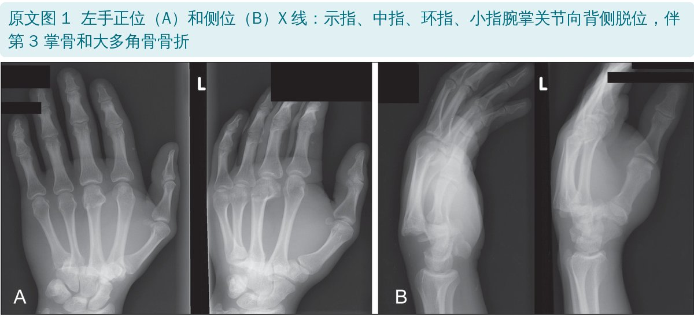
🔖原文图 1：受伤时 X 线
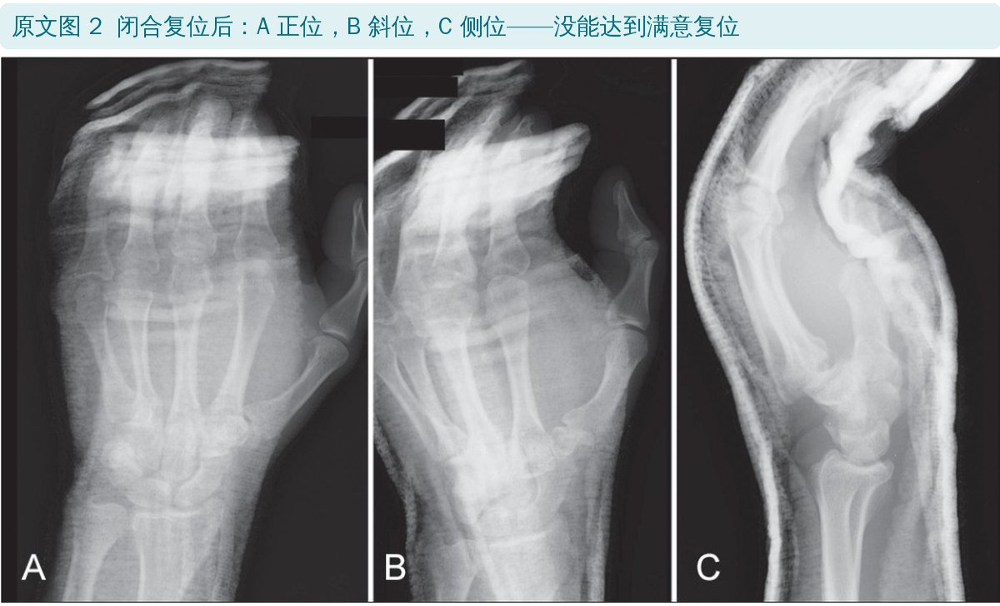
🔖原文图 2：闭合复位后
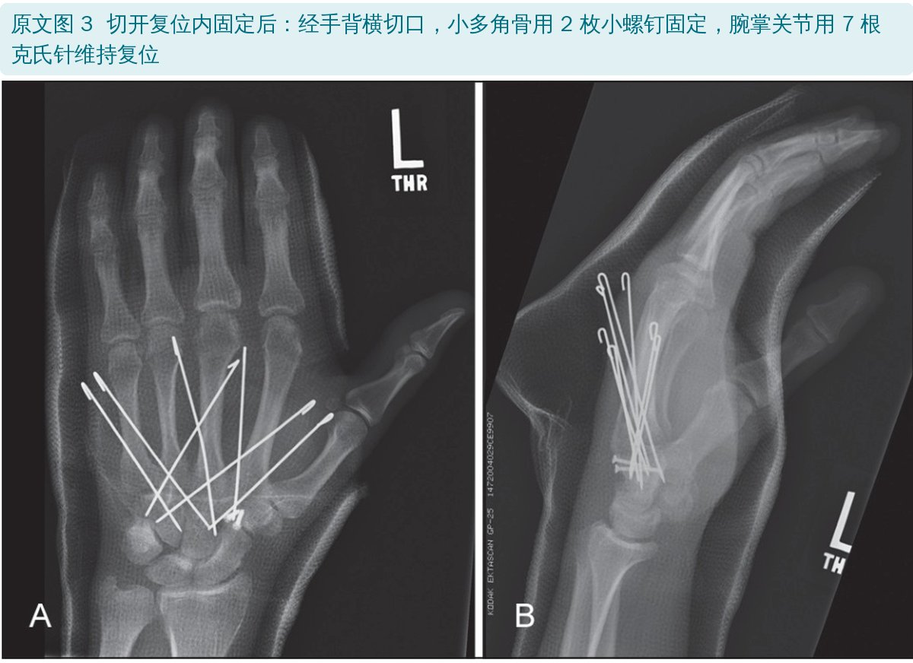
🔖原文图 3：切开复位内固定后
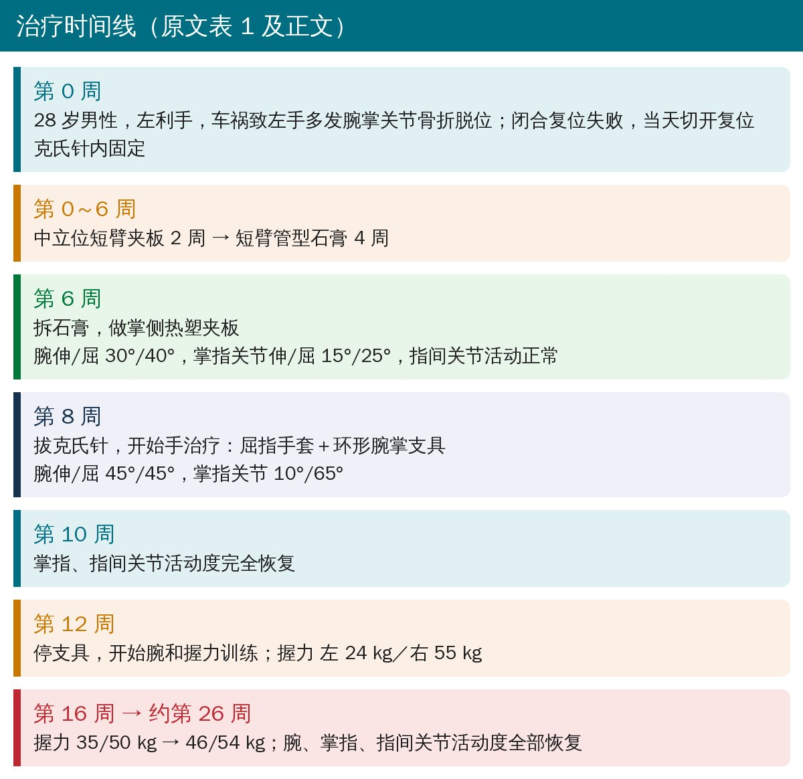
🔖治疗时间线（据原文表 1 及正文整理）
作者坦言，他们没有参与患者伤后早期的处理，所以患者在石膏里固定的时间比他们希望的要长；到第 6 周拆石膏时，腕关节只剩伸 30°、屈 40°，掌指关节只剩伸 15°、屈 25°。
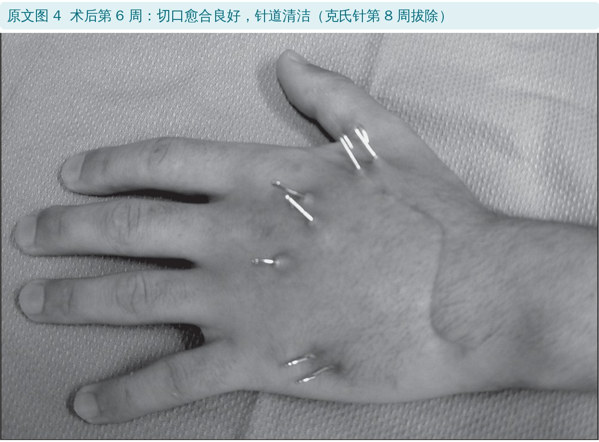
🔖原文图 4：术后第 6 周，克氏针尚未拔除
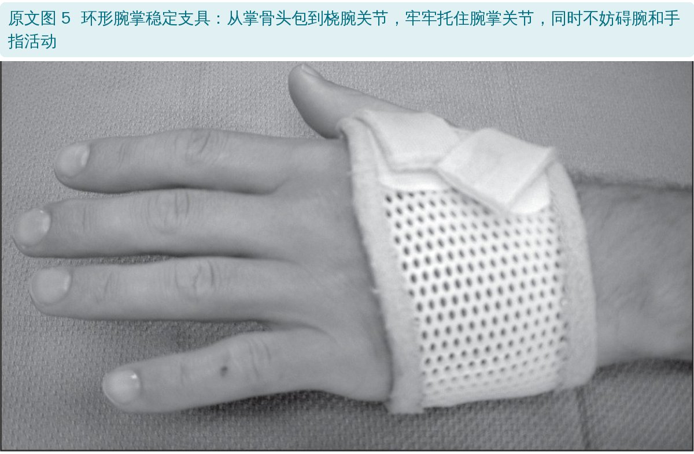
🔖原文图 5：环形腕掌稳定支具
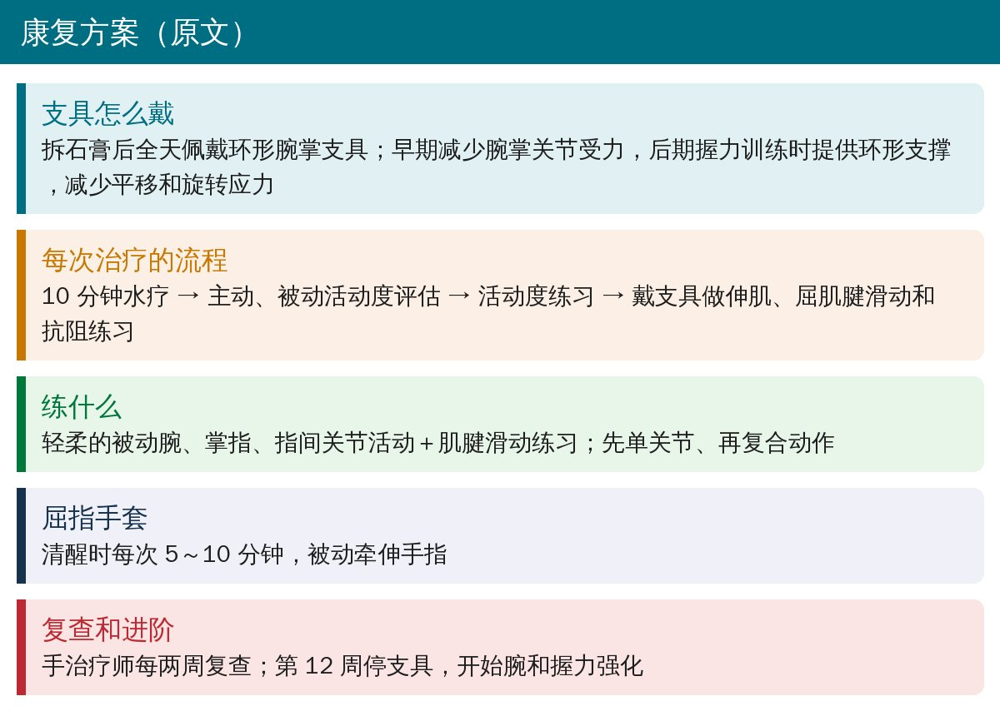
🔖康复方案（据原文整理）
这个支具的思路是只保护受伤的关节，放开没受伤的关节：早期减少腕掌关节受力，让腕、掌指、指间关节尽早活动；后期做握力训练时，再给腕掌关节提供环形支撑，减少平移和旋转应力。
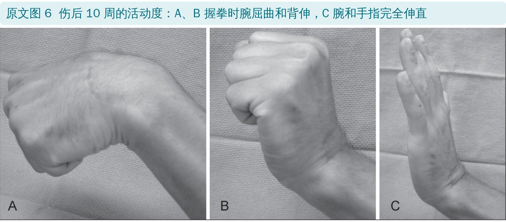
🔖原文图 6：伤后 10 周的活动度
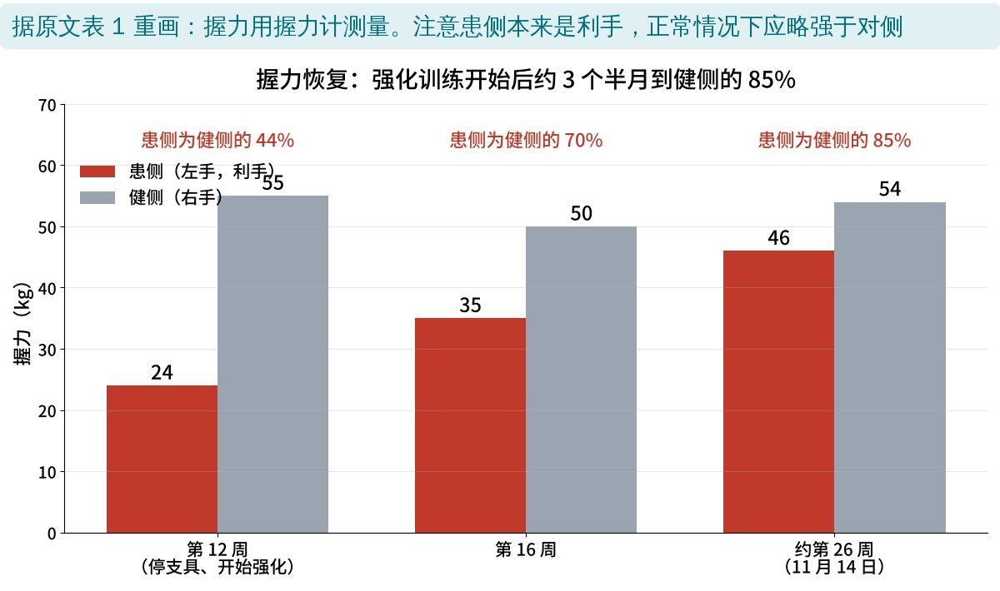
🔖握力恢复（据原文表 1 重画）
原文表 1：活动度变化（伸／屈，单位：度）
| 时间 | 腕关节 | 掌指关节 | 指间关节 |
|---|---|---|---|
| 第 6 周（拆石膏） | 30 / 40 | 15 / 25 | 正常 |
| 第 8 周（拔针，开始手治疗） | 45 / 45 | 10 / 65 | — |
| 第 10 周 | — | 正常 | 正常 |
| 约第 26 周（11 月 14 日） | 正常 | 正常 | 正常 |
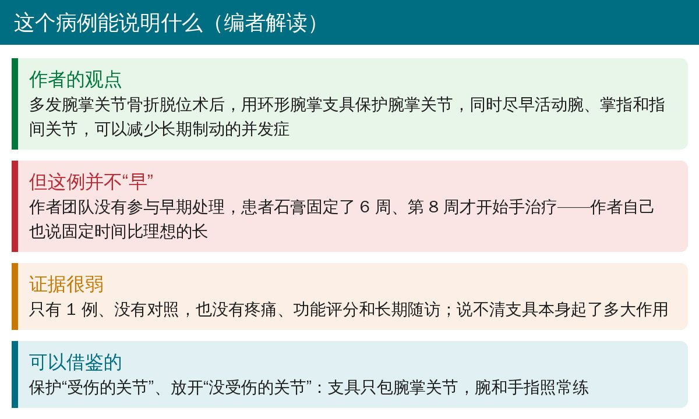
🔖编者解读
• 单个病例、没有对照，没有疼痛、功能评分和长期随访，说不清支具本身起了多大作用
• 支具是作者团队自己设计的，原文没有给出制作材料和具体做法，只有一张照片
• 患者是 28 岁的年轻男性，结果不一定能推广到年长或合并其他损伤的患者
• 正文说第 10 周活动度“全部恢复”，表 1 中腕关节活动度要到约第 26 周才记录为正常
• 正文说大多角骨骨折，图 3 图注写的是小多角骨用螺钉固定；表 1 还有“6 月 31 日”这个不存在的日期
• 腕掌关节骨折脱位术后，不必把腕和手指一起长期固定；可考虑只包住腕掌关节的支具，让腕、掌指、指间关节尽早活动
• 练习先单关节、再复合动作；配合肌腱滑动练习预防粘连，屈指手套可辅助被动牵伸
• 握力强化要等到腕掌关节稳定（本例第 12 周），强化期仍可戴支具提供支撑
• 具体何时拔针、何时开始活动，要和手术医生根据固定情况商量
欢迎关注骨科康复小黄公众号，获取更多物理治疗的专业知识！
📄参考文献：
Bell T, Chinchalkar SJ, Faber K. Postoperative management of carpometacarpal joint fracture dislocation of the hand: A case report. Can J Plast Surg. 2010;18(3):e37-e40.
原文版权归 Pulsus Group Inc. 所有（All rights reserved），非开放许可。本文为非商业的学术交流中文解读：原文图 1～6 引自原文，图像未作修改，中文说明见图注；握力图由编者根据原文表 1 重画，整理卡为编者根据原文撰写。仅供学习交流，如有侵权请联系删除。